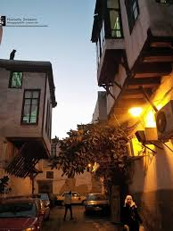
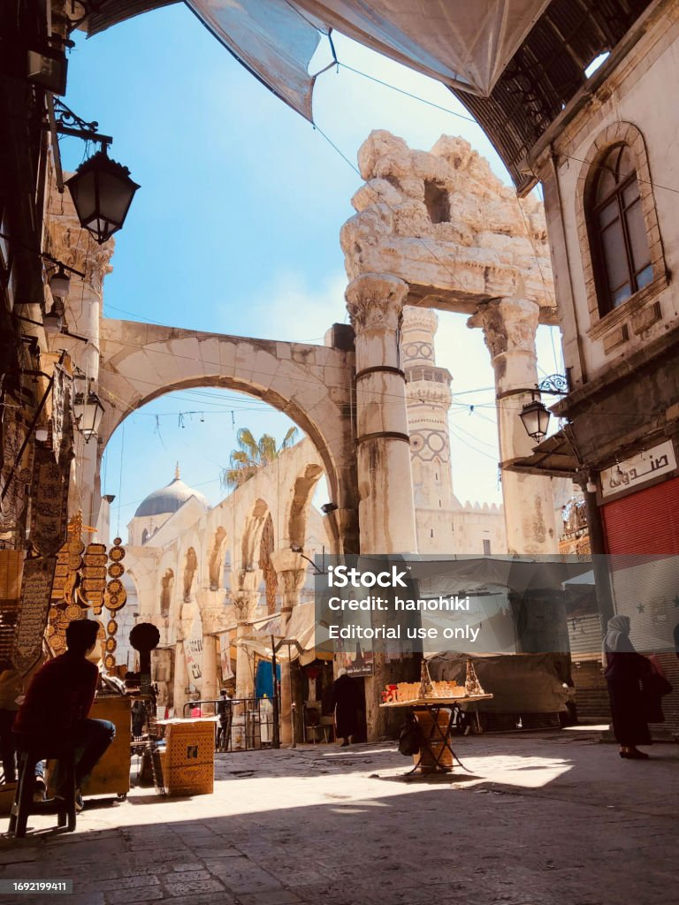

Mount Qasioun – Guardian of Damascus
Mount Qasioun (Jabal Qasioun) rises to 1,151 metres above sea level, looming over the northern edge of Damascus and offering the most spectacular panoramic views of the city and the Ghouta plain below. It has been considered sacred since antiquity — Islamic tradition holds that this is the site where Cain killed Abel, making it one of the holiest mountains in the Abrahamic traditions.
The mountain is dotted with caves, shrines, and ancient mosques. The Cave of Blood (Magharat al-Dam) is venerated as the site of the first murder in human history. Nearby, the tiny Mosque of the Arba'een (Forty) is carved directly into the mountainside rock, its interior polished smooth by centuries of pilgrims' hands.
Today, Mount Qasioun is a beloved destination for Damascenes at all hours. At sunset and after dark, the mountain's restaurants, cafés, and promenade fill with families enjoying the spectacular view of the city lights below. The view of Damascus from Qasioun at night — a glittering carpet of light stretching to the horizon — is considered one of the most beautiful urban panoramas in the Arab world.


